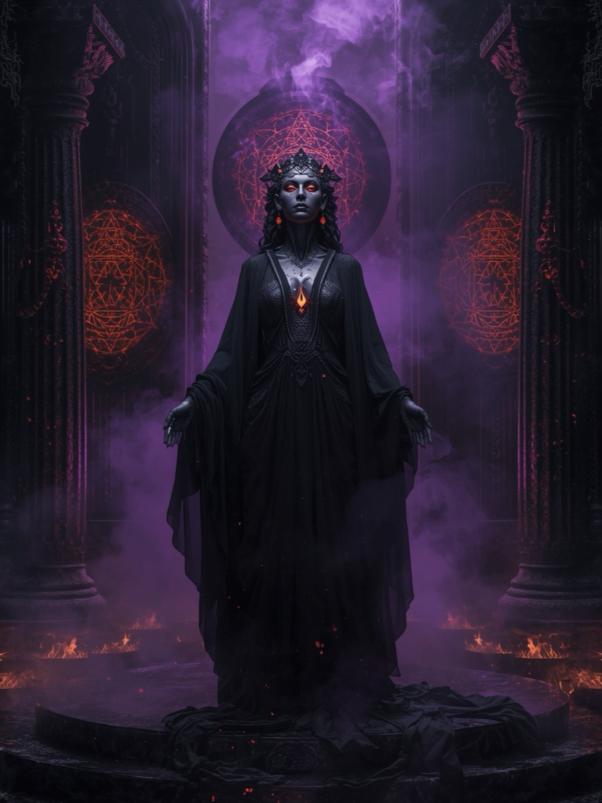
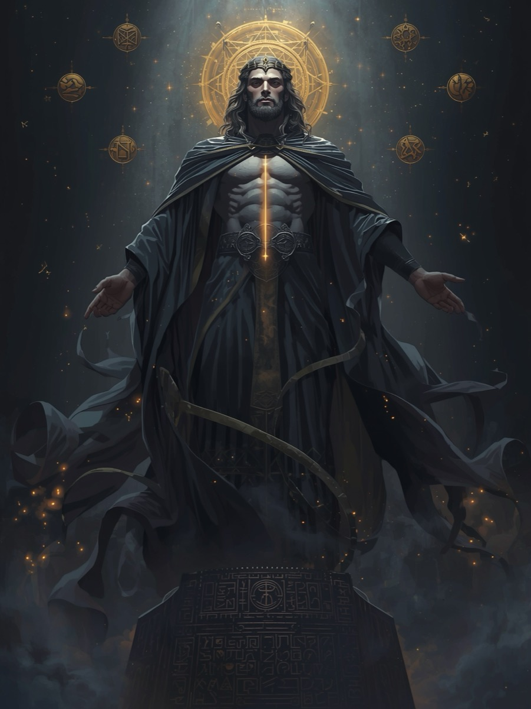

Reclaim Your Fragments
Enter the Vault where the unseen meets the unspoken, where every forgotten piece waits to be remembered.
Choose your archetype and step into the chamber of your becoming.
Through the mirror of darkness, you learn to see in full light again.
Within the Shadow Vault, two divine archetypes await your soul's choosing. Each embodies the sacred frequency of transmutation, yet expresses it through different currents of being. Nyxara whispers as the silent flame that asks to be felt, not feared, while Kaelion stands as the keeper of the abyss who holds the keys to your forgotten corridors of truth.

